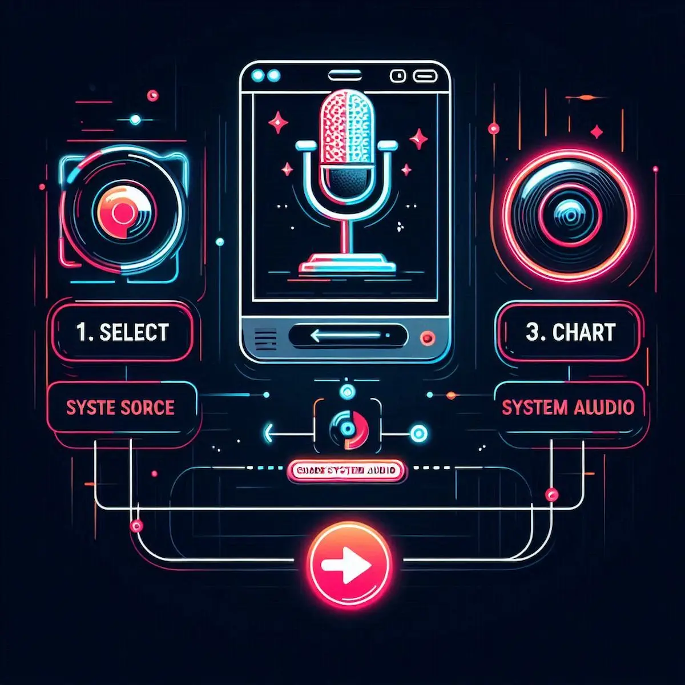

Screen Recorder Ultra Pro
Record 4K Screen & Audio with Facecam. No Watermark. No Limits.
Why This is the Best Screen Recorder for 2026
Welcome to Screen Recorder Ultra Pro. We built this tool because we were tired of downloading heavy software just to record a 5-minute tutorial. Most online recorders limit you to 720p or put a giant watermark on your work.
We decided to change that. This tool uses your browser's own power (built on modern WebRTC technology) to capture 4K Crystal Clear Video directly. It's lightweight, privacy-focused, and completely free. Whether you are a student recording a lecture, a gamer capturing a kill-streak, or a professional making a presentation — this tool is designed for you.
How to Record Like a Pro (Step-by-Step)
If you are new to browser-based recording, don't worry. It is easier than installing software. Follow these simple steps:

- Configure Your Source: First, toggle the Microphone or Facecam buttons above if you need them. Adjust the mic volume using the slider to avoid distortion.
- Select Screen Area: Click the "Start Recording" button. Your browser will ask what to share. You can choose the Entire Screen, a specific Window, or just a Browser Tab.
- Important for Audio: If you want to record the sound coming from your computer (like game audio or a video call), make sure to check the tiny box labelled "Share system audio" in the popup window.
- Edit & Save: Once you hit "Stop", play the video to preview it. If you are happy, click "Save Video" to download the WebM file instantly to your device.
Your Data Stays on Your Device
In an era of data leaks, we take your privacy seriously. Unlike other online tools that upload your video to a cloud server for processing, Screen Recorder Ultra Pro works entirely Client-Side.
This means the video is rendered using your computer's RAM and Processor. We (the developers) never see your screen, your face, or hear your audio. Once you close this tab, the recording data is wiped from memory forever. It is safe for recording banking transactions, private chats, or confidential work meetings.
Troubleshooting & Pro Tips
Sometimes browsers can be tricky. Here are some solutions to common issues users face:
For Gamers: Recording Without the "FPS Drop"
One of the biggest complaints from gamers is that recording software slows down their PC. Heavy apps like OBS can eat up your CPU, causing your game to lag. Because this tool runs natively in the browser using Hardware Acceleration, it puts minimal load on your system. It has been tested while playing graphic-intensive games, and the 60 FPS recording stays smooth because it bypasses the need for background processes. Capture that pentakill without sacrificing gameplay performance.
The Secret to Flawless Presentations: The Built-in Teleprompter
Have you ever watched a tutorial where the speaker keeps looking down at their notes? It breaks the connection with the audience. The Draggable Script Reader solves exactly this. Simply paste your speech into the floating box and drag it right next to your camera lens on the screen. This way, it looks like you are looking directly at your viewers while reading your lines perfectly — a game-changer for teachers and content creators.
Mastering Audio Balance: Mixing Voice and System Sound
Bad audio ruins a good video. A common issue with basic recorders is that the game sound often drowns out your voice. In the settings panel above, you will see a "Mic Volume" slider. Set it to around 1.5x if you are recording gameplay. This boosts your vocals over the background noise. Since this tool mixes the audio channels in real-time before the file is even created, you save hours of post-production editing.
Why IT Departments Love This Tool (No Install Needed)
If you are working on a school computer or a corporate laptop, you probably don't have "Administrator Privileges" to install software. Since this is a pure web application, you don't need to install anything. You just open the link, record your bug report or presentation, and download it. It leaves no trace on the computer's registry — the perfect solution for strict office environments.
Live Annotations: Teaching Concepts Visually
Explaining complex software or code? Verbal instructions aren't always enough. The Screen Draw Toolbar lets you highlight buttons, circle errors, or draw arrows in real-time while you record. Instead of saying "click the button on the top right," you can just circle it — significantly increasing viewer retention for educators and developers.
Building Your Personal Brand with Facecam
People connect with faces, not just screens. The Facecam Overlay isn't just a static box — you can drag it to any corner so it doesn't block important content. A shape-shifter feature (Circle vs. Rectangle) lets you match your aesthetic. Putting your face in the corner adds a layer of emotion that text simply cannot convey.
Instant Thumbnails: The "Snapshot" Feature
Here is a pro tip for YouTubers: don't take a separate photo for your thumbnail. While you are recording, if you see a perfect moment on screen, hit the Camera Icon button on the control bar. It instantly grabs a high-quality PNG of your screen (including your facecam and drawings), ensuring your thumbnail matches your video content perfectly.
Safe for Sensitive Data: The Client-Side Advantage
Many "free" online recorders secretly upload your video to their servers to watermark it. This tool uses Blob Storage technology within your browser. The video file is constructed byte-by-byte on your own RAM. Until you click "Save," the file doesn't exist anywhere else. This "Zero-Server" architecture is the gold standard for digital privacy.
Why .WebM is Better Than MP4 for the Web
The file downloads as .WebM because we chose the VP9 Codec for the best balance of quality-to-filesize. An MP4 of 4K content might be 500 MB, but the same quality in WebM could be just 200 MB — faster uploads to YouTube, Discord, or Slack. If you absolutely need MP4, almost all modern video editors accept WebM, so compatibility is rarely an issue.
Recording Without Internet? Yes, It's Possible
Since the core logic of this recorder is loaded into your browser's cache, you don't need an active internet connection to record once the page is loaded. If your Wi-Fi drops in the middle of a session, you won't lose your video. You can finish, stop the recording, and save the file completely offline — crucial when you can't risk a connection drop ruining a long session.
Frequently Asked Questions
Is there a watermark on the video?
No. We believe your content belongs to you. Even on the free version, there are zero watermarks and no time limits on your recording.
Does it work on Mobile?
Currently, mobile operating systems (iOS and Android) do not allow browser websites to access the screen recording API for security reasons. This tool is optimised for Windows, macOS, and Linux desktops.
Why is the file format .WebM?
WebM is a modern video format designed for the web. It provides high-quality video with much smaller file sizes compared to MP4. It is natively supported by YouTube, so you can upload directly without converting.
Initializing secure discussion portal...